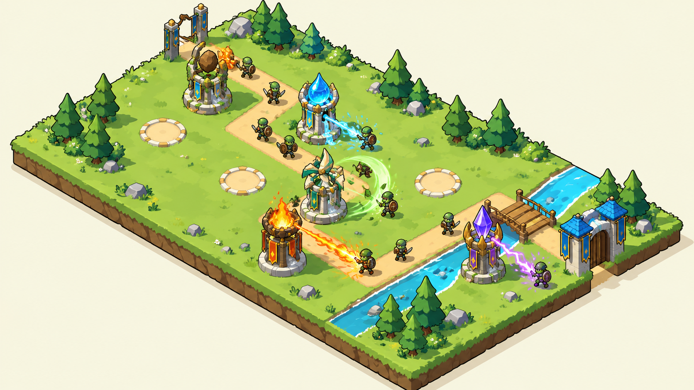
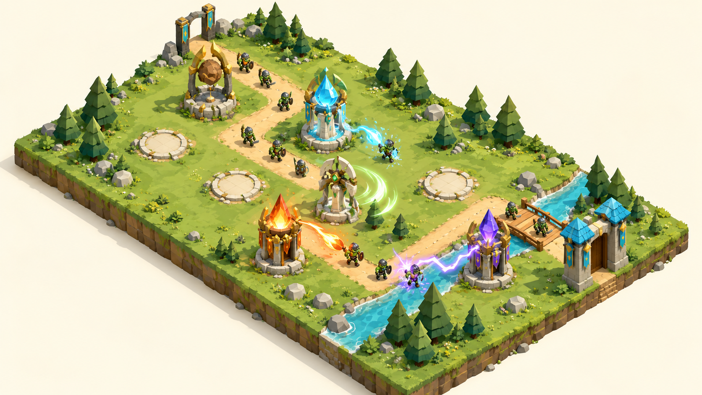
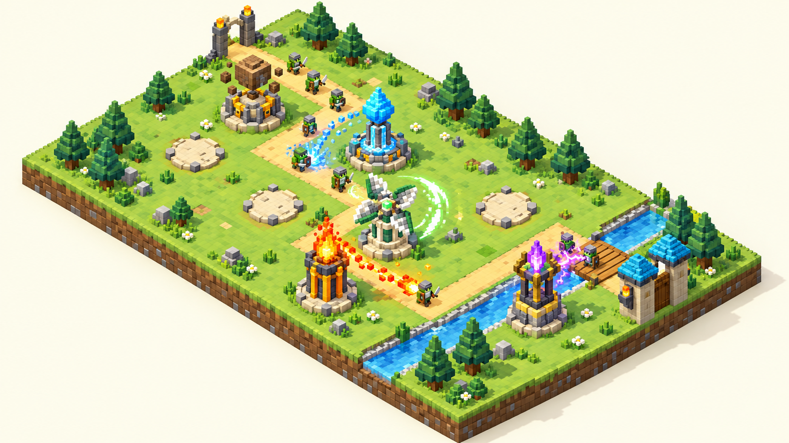
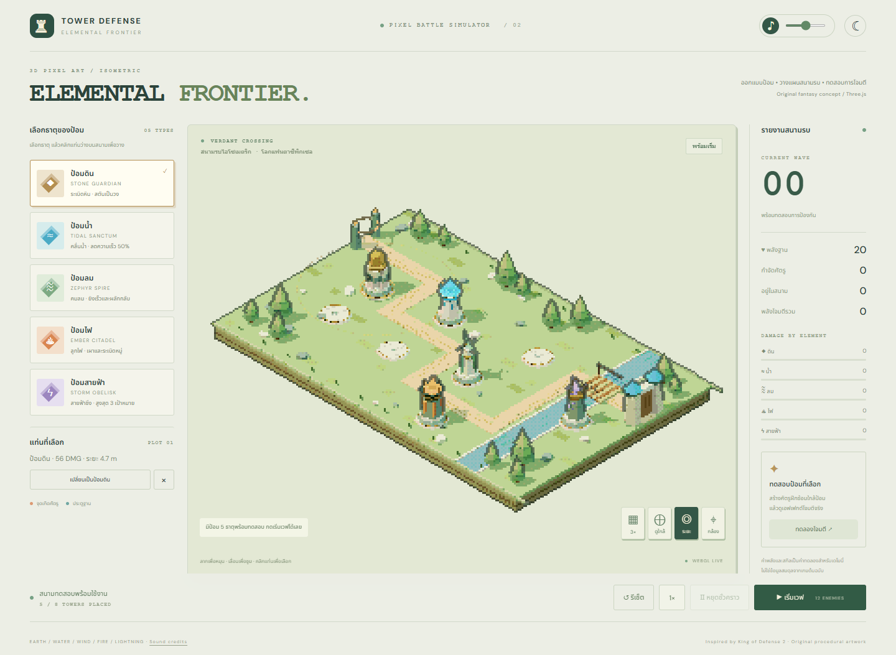

ต้นแบบ Three.js ที่มีป้อมธาตุดิน น้ำ ลม ไฟ และสายฟ้า สนามรบแบบไอโซเมตริก ศัตรูเดินตามเส้นทาง และระบบทดสอบสกิลพร้อมเสียง

01 / Toon / Cel-shaded
02 / Stylized Low-poly
03 / Voxelภาพต้นฉบับ PNG ทั้ง 3 แบบ, ข้อมูลป้อมและสนามรบแบบ JSON, เครดิตเสียง, source code และเอกสารฉบับนี้
https://github.com/pawnpicj/tower_defense_elemental
วันที่จัดทำ: 14 ตุลาคม 2026 (Asia/Bangkok)
ค่าทั้งหมดเป็นค่าทดลองจากโปรเจกต์นี้ ไม่ใช่ข้อมูลสมดุลจาก King of Defense 2
| ป้อม | DMG | ระยะ | ช่วงยิง | ความสามารถ |
|---|---|---|---|---|
| ดินSTONE GUARDIAN | 56 | 4.7 m | 1.8 s | ระเบิดหิน · สตันเป็นวง |
| น้ำTIDAL SANCTUM | 26 | 4.8 m | 1.05 s | คลื่นน้ำ · ลดความเร็ว 50% |
| ลมZEPHYR SPIRE | 18 | 5.1 m | 0.48 s | คมลม · ยิงเร็วและผลักกลับ |
| ไฟEMBER CITADEL | 34 | 4.5 m | 1.25 s | ลูกไฟ · เผาและระเบิดหมู่ |
| สายฟ้าSTORM OBELISK | 38 | 5 m | 1.15 s | สายฟ้าชิ่ง · สูงสุด 3 เป้าหมาย |
เวฟถัดไปเพิ่มศัตรูครั้งละ 3 ตัวและเพิ่ม HP 20% ต่อเวฟ ศัตรูทั่วไป 600 HP / แทงก์ 1,000 HP ป้อมเลือกโจมตีศัตรูที่เดินไกลที่สุดในระยะ
วาง เปลี่ยน หรือนำป้อมออกได้ พร้อมหยุดเกม เร่งเวลา 1x / 2x / 3x และรายงานดาเมจแยกธาตุ
เส้นขอบเข้ม สีสด เงาแบ่งระดับ เน้นแยกป้อม ศัตรู และสกิลให้เห็นชัด
ภาพคอนเซปต์จาก ImageGen ไม่ใช่ภาพเรนเดอร์จากเกมจริง
โมเดลเหลี่ยมขนาดใหญ่ แสงนุ่ม สีเป็นธรรมชาติ ไม่มีเส้นขอบวาด
ภาพคอนเซปต์จาก ImageGen ไม่ใช่ภาพเรนเดอร์จากเกมจริง
สนาม ป้อม ศัตรู และเอฟเฟกต์สร้างจากบล็อกลูกบาศก์สามมิติ
ภาพคอนเซปต์จาก ImageGen ไม่ใช่ภาพเรนเดอร์จากเกมจริง
ระบบใช้ไฟล์เสียงบันทึกและเสียงออกแบบที่ได้รับอนุญาต รวม 13 คลิป มีเสียงปล่อยสกิลและกระทบเป้าหมาย แยกเสียงสายฟ้าชิ่ง พร้อมเปิด/ปิดและปรับระดับเสียง
การดัดแปลง: ตัดช่วงเสียง ปรับระดับเสียงและ fade แปลงเป็น mono WAV 44.1 kHz และปรับ pitch เล็กน้อยระหว่างเล่น เสียงหินผสมในสกิลดินและไฟ รายละเอียดต่อไฟล์อยู่ใน public/audio/sources.json และ AUDIO_CREDITS.md

ภาพจากตัวเกมจริง: Orthographic isometric, pixel render 2x / 3x / 4x ผู้ใช้รายงานว่ารายละเอียดไม่ชัด จึงมีภาพคอนเซปต์ทางเลือกในหน้า 3-5
เปิด http://127.0.0.1:5173/ หรือใช้ start-preview.cmd
เปิด http://127.0.0.1:4173/
Build ผ่าน การทดสอบเบราว์เซอร์ตรวจกล้องไอโซเมตริก ซูม วางป้อม สกิลและเสียงทั้ง 5 ธาตุ รวมถึงหน้าจอมือถือผ่าน ไม่พบข้อผิดพลาด JavaScript ในรอบตรวจ